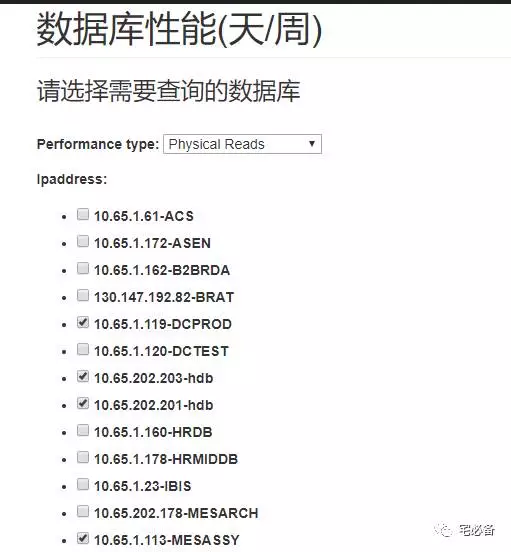
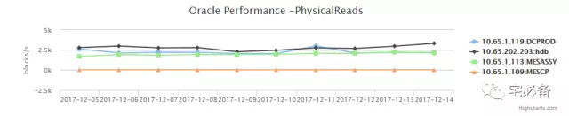
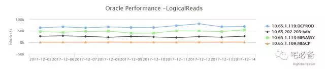
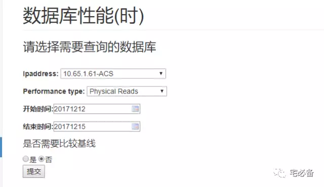
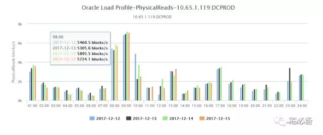

利用Django在前端展示Oracle 状态趋势
2017-12-15 Python 宅必备
开发环境
操作系统:CentOS 7.4
Python版本 :3.6
Django版本: 1.10.5
操作系统用户:oms
数据处理:pandas
前端展示:highcharts
通过上面我们已介绍了如何定时获取系统Oracle状态语句以及如何利用pandas处理成highcharts识别的格式
这节讲如何让其在前端显示
建立页面的步骤
我们还是通过这张图的步骤来说明如何建立页面

1. urls.py页面
from django.conf.urls import url, include
from monitor import views
urlpatterns = [
url(r'^$', views.index, name='index'),
url(r'^oracle_command/$',views.oracle_command, name='oracle_command'),
url(r'^commandresult/$',views.commandresult, name='commandresult'),
url(r'^oracle_status$',views.oracle_status, name='oracle_status'),
url(r'^oracle_performance$',views.oracle_performance, name='oracle_performance'),
url(r'^performance$',views.performance, name='performance'),
url(r'^oracle_topevent$',views.oracle_topevent, name='oracle_topevent'),
url(r'^check_topsql$',views.check_topsql, name='check_topsql'),
url(r'^addbaseline$',views.addbaseline, name='addbaseline'),
url(r'^check_hitratio$',views.check_hitratio, name='check_hitratio'),
url(r'^linux_list$',views.linux_list, name='linux_list'),
]
-
oracle_performance分别为系统状态趋势的页面(以天为单位)
-
performance分别为系统状态趋势的页面(以小时为单位)
2. views.py
这里以oracle_performance函数做例子讲解
def oracle_performance(request):
baseline=[]
ip=[]
ip1=oraclelist.objects.all().order_by('ipaddress')
for i in ip1:
ip.append(i.ipaddress+':'+i.tnsname)
if request.method == 'POST': # If the form has been submitted...
#return HttpResponse('ss')
form = charts_oracle_performance(request.POST) # A form bound to the POST data
if form.is_valid(): # All validation rules pass
starttime1 = request.POST['starttime']
endtime1 = request.POST['endtime']
performance_type= form.cleaned_data['performance_type']
ipaddress_tnsname_list=form.cleaned_data['ipaddress']
interval=request.POST['interval']
if starttime1 =='' or endtime1 =='':
return HttpResponse('Please give the Start and End time')
else:
starttime=int(str(time.mktime(time.strptime(starttime1,'%Y%m%d'))).split('.')[0])
endtime=int(str(time.mktime(time.strptime(endtime1,'%Y%m%d'))).split('.')[0])
if starttime>endtime:
return HttpResponse('The Start time must larger than the End time')
#starttime=int(str(time.mktime(time.strptime(starttime1,'%Y%m%d %H:%M:%S'))))
#endtime=int(str(time.mktime(time.strptime(endtime1,'%Y%m%d %H:%M:%S'))))
else:
title='Oracle Performance '+'-'+performance_type
subtitle=performance_type
title_y=' Blocks/Seconds'
if performance_type in ['PhysicalReads','LogicalReads']:
unit='blocks/s'
elif performance_type in ['RedoSize']:
unit='bytes/s'
elif performance_type in ['DBTime','CPUTime']:
unit='Minites'
else:
unit='times/s'
final_series=[]
#final_series=oracle_performance_day(performance_type,ipaddress_tnsname_list,starttime,endtime,interval)
#return HttpResponse(final_series)
if interval=='day':
final_series=oracle_performance_day(performance_type,ipaddress_tnsname_list,starttime,endtime,interval)
x_categories=final_series[0]['x']
elif interval=='week':
final_series=oracle_performance_week(performance_type,ipaddress_tnsname_list,starttime,endtime,interval)
x_categories=final_series[0]['x']
#return HttpResponse(final_series)
dic={'categories':x_categories,'series':final_series,'title':title,'subtitle':subtitle,'unit':unit,'title_y':title_y}
#return render_to_response('highcharts_histogram.html',dic) # Redirect after POST
#return HttpResponse (final_series)
return render_to_response('highcharts.html',dic) # Redirect after POST
else:
return render(request, 'oracle_performance.html', {'form': form})
else:
form = charts_oracle_performance() # An unbound form
d1=datetime.datetime.now()
etime= d1.strftime("%Y%m%d")
stime=(d1-datetime.timedelta(hours=720)).strftime("%Y%m%d")
#etime= d1.strftime("%Y%m%d %H")
#stime=(d1-datetime.timedelta(hours=24)).strftime("%Y%m%d %H")
dic={'form':form,'etime':etime,'stime':stime}
#dic={'form':form,'ip':ip,'ipaddress_checked':ipaddress_checked,'etime':etime,'stime':stime}
return render(request, 'oracle_performance.html', dic)
上面的url设定调用views.py里面的oracle_performance函数，该函数讲解如下:
-
首先判断请求的方法是不是post(提交表单前)，如果不是则打开oracle_performance.html页面，charts_oracle_performance为定义的表单，可在forms.py中定义
-
如果请求方法为post(提交表单后)，首先验证输入是否正确，如果正确则获取相应的ipaddress,tnsname,performance_type等信息,
-
接下来根据performance_type的类型(物理读，逻辑读等)调用monitor/command/views_oracleperformance.py文件里面的方法来得到我们想要的数据，这个方法的讲解在昨天的公众号，大家可自行查看
-
最后我们将TOP SQL相关的内容封装成字典重定向到相应的template文件中
3. template文件
这里我们使用highcharts.html文件来显示趋势图
<div id='newadd'>
<script>
$(function () {
$('#container').highcharts({
title: {
text: '{{title|safe}}',
x: -20 //center
},
xAxis: {
categories: {{categories|safe}}
},
yAxis: {
title: {
text: '{{unit}}'
},
plotLines: [{
value: 0,
width: 1,
color: '#808080'
}]
},
legend: {
layout: 'vertical',
align: 'right',
verticalAlign: 'middle',
borderWidth: 0
},
plotOptions: {
series: {
cursor: 'pointer',
point: {
events: {
click: function(e) {
$("#test3").val(this.y+'s'+this.x);
//上面是当前页跳转，如果是要跳出新页面，那就用
//window.open(e.point.url);
//这里的url要后面的data里给出
}
}
},
}
},
series:[
{% for i in series %}
{
name: '{{i.name}}',
data: {{i.data}}
},
{% endfor %}
]
});
});
</script>
</div>
这里通过highcharts来展现数据库性能趋势状态
Django允许在html文件内部使用程for循环的形式来迭代列表
关于oracle_peforance页面就说到这了，performance页面可自行参考源码
4. 效果展示
1.数据库系统状态趋势(天为单位)
首先是表单提交之前的界面

-
这里选择需要查询的数据库，支持多个数据库同时查询
-
然后是起止时间以及性能类型
-
最后可以选择天和周为单位
点击提交后会展示各个数据库该时间段的趋势图


2.数据库系统状态趋势(小时为单位)
首先是表单提交之前的界面

-
这里选择需要查询的数据库
-
然后是起止时间以及性能类型
-
最后是是否比较基线,这个后续会有单独介绍
点击提交后会展示出每天各个时间段的趋势图

5. 源代码位置
欢迎访问我的github主页查看源码